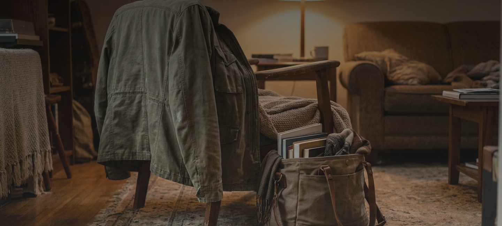
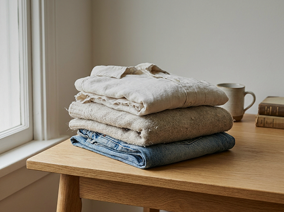
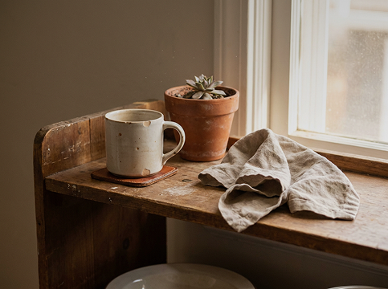

§ 05 — DonateTake part
Don't throw away,just patina!
버리기엔 아깝거나 귀찮고, 그대로 두기엔 자리를 차지하는 애매한 물건이 있나요?

유행이 지나서, 혹은 작은 흠집 때문에 쓰지 않는 옷과 물건들.
그냥 버리면 쓰레기가 되지만, patina를 만나면 새로운 이야기가 담긴 오브제로 다시 태어납니다. 당신의 일상을 채웠던 흔적을 patina에 기부해 주세요. 지속 가능한 사물의 순환이 당신의 손에서부터 시작됩니다.
§ 05.1What we collect



기부 불가 항목 — 오염이 너무 심해 재작업이 불가능한 의류, 일회용 플라스틱 제품 등
§ 05.2Donate process
- 01
기부 신청서 작성
하단 폼에 물품 정보와 스토리, 사진을 등록합니다.
- 02
수거 박스 발송
선정된 기부자께 물품을 담을 파티나 에코 수거백을 보냅니다.
- 03
오브제 업사이클
디자이너들의 개입을 통해 새로운 아카이브 가구로 탄생합니다.